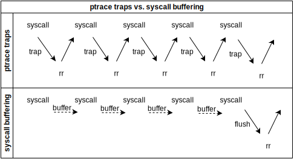

rr
rr records nondeterministic executions and debugs them
deterministically.
Practical tool; version 1.2 is latest release. Used to debug
Firefox.
Deterministic debugging: record nondeterministic failure once,
debug deterministically forever.
Record intermittent test failures "at scale" online, debug the
recordings offline at leisure.
Omniscient debugging: issue queries over program state changes;
go backwards in time.
rr record prog --args
→saves recording
rr replay
→debugger socket drives
replay of most recent recording
Most of an application's execution is deterministic.
rr records the nondeterministic parts.
Examples of nondeterministic inputs
clock_gettime(...&now);
read(fd, buf,
4096);
__asm__("rdtsc")
ioctl(...)
- UNIX signals...
Then during replay, emulate system calls and rdtsc
by writing the saved nondeterministic data back to the tracee.
Shared-memory multitasking is a nondeterministic "input".
... but modern hardware can't record it efficiently. So rr
doesn't record truly parallel executions.
Scheduling tasks
Can switch tasks at syscalls. Must preempt straight-line code
too; and replay the preemptions deterministically.
Hardware performance counters (HPCs)
Recent chips count instructions-retired, branches-retired,
..., and can be programmed to interrupt after a count
of x.
Simulate task preemption with HPC interrupts.
Idea: program insns-retired counter to interrupt
after k ✱. That k approximates
a time slice.
Replaying preemption
Record the insn-retired counter value v to the trace file.
During replay, program the interrupt for v. Voilà.
UNIX signals are recorded and replayed like task preemptions.
Record counter value v and signum. Replay by interrupting
after v and "delivering" signum.
Basic requirements
- Intel chip with Nehalem (2010) or later µarch1. VM
with perf counter virtualization is OK.
- x86 userspace. x86-64 kernel is OK.
- linux with
PTRACE_INTERRUPT support: ≥
3.4
- (strongly encouraged) linux with seccomp-bpf support:
≥ 3.5
rr touches low-level details of machine architecture, by
necessity; f.e. kernel syscall ABI.
Supporting more ISAs is "just work". x86-64 coming.
ARM chips don't have the performance counters that rr requires.
So no ARM support is possible at the moment.
Precise HPC events identify points in execution.
Precise replay of signals and preemption requires interrupting
tracees at these events.
✱Performance counters are messier in reality
- Insns-retired counter is imprecise. Use precise
retired-branch counter instead.
- Counter interrupts can overshoot. Subtract a "skid
region".
- (So replay point is technically indeterminate. But
doesn't seem to be a problem in practice, yet.)
seccomp-bpf enables rr to selectively trace
syscalls.
Only trap to rr for syscalls that can't be handled in the tracee.
Over 100x faster in µbenchmarks.
Buffer syscalls; flush buffer as "super event"

Tasks are controlled through the ptrace API.
HPCs are controlled through the perf event API.
The first traced task is forked from rr. After
that, clone() and fork()from tracees
add new tasks.
And tasks die at exit().
Simplified recorder loop
while live_task():
task t = schedule()
if not status_changed(t):
resume_execution(t)
state_change(t)
Scheduling a task
task schedule():
for each task t, round-robin:
if is_runnable(t)
or status_changed(t):
return t
tid = waitpid(ANY_CHILD_TASK)
return task_map[tid]
Tasks changing status
bool status_changed(task t):
# Non-blocking
return waitpid(t.tid, WNOHANG)
# Deceptively simple: includes
# syscalls, signals, ptrace
# events ...
Resuming task execution
Invariant: At most one task is running userspace code.
All other tasks are either idle or awaiting completion of a
syscall.†
Multiple running tasks suffer from shared-memory
hazards.
rr doesn't attempt to record these hazards, so can't replay them
deterministically.
Resuming a task, simplified
void resume_execution(task t):
ptrace(PTRACE_SYSCALL, t.tid)
waitpid(t.tid) # Blocking
# Again, deceptively simple: traps
# for syscalls, signals, ptrace
# events ...
Most recorder work is done
for state_change(task
t).
But before looking at it, a few digressions ...
Generating time-slice interrupts
perf_event_open() fd for
retired-conditional-branches; details are µarch
specific
- Set event "sample period" to k
- Make event fd O_ASYNC and set tracee task as owner
- → tracee sent SIGSTKFLT at rbc ≈ k
Trapping tracees at rdtsc
prctl(PR_SET_TSC, PR_TSC_SIGSEGV) → tracees
executing rdtsc trap to SIGSEGV
- rr examines which instruction triggered SIGSEGV
- if rdtsc, value is recorded by rr tracer and tracee insn is
emulated
Tracees generate ptrace events by executing fork, clone, exit,
and some other syscalls.
ptrace events exist for linux reasons that aren't
interesting.
(rr tracees can share memory mappings with other processes.
Not possible to record efficiently in SW; needs kernel and/or HW
support. Unsupported until then.)
Tracee events recorded
by state_change()
- "Pseudo"-signals delivered by implementation of rdtsc or
time-slice interrupts
- Other, "real", signals
- ptrace events
- Syscall entry and exit
Some syscalls must be executed atomically; can't switch task
until syscall finishes.
Ex: mmap modifies address space, can race other
syscalls.
On the other hand, some syscalls require switching;
syscall can't finish until the task switches.
Ex: waitpid() only returns after child runs, changes
state.
Problem: kernel writes non-atomic syscall outparams in
an order that rr can't record.
Kernel outparam writes race rr tracees in userspace, syscalls.
Solution: allocate scratch space for the outparams of
non-atomic syscalls. At syscall exit, write scratch data back to
outparams.
→ rr orders outparam writes
POSIX signals can arrive at practically any point in execution
and invoke signal handler code.
→ tracee code can be (almost) arbitrarily
re-entered
Linux exits tracees out of syscalls with
an ERESTART* error code before delivering signals.
Syscall not always restarted after signal.
Sighandler
nesting gets
complex.
When a signal becomes pending
- consult sighandler table to see if there's a registered
sighandler function
- if so,
SINGLESTEP into the sighandler frame and
record the struct sigframe set up by kernel. Also
record sighandler registers.
- otherwise, deliver the signal using the ptrace API
Sighandlers exit using the SYS_sigreturn syscall.
rr uses these calls to help determine whether interrupted syscalls
are restarted.
Tracees exit in unpredictable order at fatal signals like
SIGABRT. Naïve waitpid() calls deadlock.
exit_group: same problem.
"Unstable" tracee exit
rr solves this by detaching and not waiting on affected tracees.
†Breaks rr scheduling invariant.
ptrace traps are expensive. Better to do as much work in tracee
process as possible.
Use seccomp-bpf to selectively trap syscalls.
Syscall hooks are LD_PRELOAD'd into tracees.
Hook functions record kernel return value and outparam data to
the syscall buffer.
rr monkeypatches __kernel_vsyscall() in vdso to jump
to rr trampoline.
Trampoline calls dispatcher, which calls rr hook if
available.
Untraced syscalls are recorded to syscallbuf by tracee.
Traced events recorded by the rr process "flush" the
tracee's syscallbuf.
Lib falls back on traced syscalls.
Simplified example of syscallbuf hook function
static int sys_close(int fd)
{
long ret;
if (!start_buffer_syscall(SYS_close))
/* Fall back on traced syscall.
* This generates a ptrace trap. */
return syscall(SYS_close, fd);
/* Untraced syscall. Does not generate
* ptrace trap.*/
ret = untraced_syscall1(SYS_close, fd);
/* Save the result to syscall buffer. */
return commit_syscall(SYS_close, ret);
}
How untraced syscalls are made
seccomp-bpf traps generate PTRACE_EVENT_SECCOMP in
tracer process.
rr can then PTRACE_SYSCALL the tracee into traced
syscall.
Problem: buffered syscalls don't trap to rr, by design.
But may-block syscalls (f.e. waitpid()) require rr to
schedule another task.
perf events to the rescue: "descheduled" event
Set event to fire on tracee context switch. Event traps to rr.
Buffered syscall blocks → context switch → rr
trap
Generating desched events
- In tracee,
perf_event_open() fd for
context-switch counter
- Set event "sample period" to
1 (i.e. next context
switch) just before buffered syscall
- Disarm event just after buffered syscall.
- → tracee sent SIGSYS if context switched during
buffered syscall
Traces are saved to $XDG_DATA_HOME/rr,
or ~/.rr.
Stored on disk uncompressed. Trace compression is planned.
Trace directory contents
args_env: command-line args and environment
pairs used to execvpe() initial tracee
events: sequence of syscalls, signals, and
various other execution events
mmaps: metadata about mmap'd files
data/data_header: all recorded data,
along with metadata about when it was recorded
version: trace format version number
Emulate most syscalls using trace data.
Actually execute a small number.
Built around PTRACE_SYSEMU
SYSCALL runs tracee to syscall, executes it.
SYSEMU runs to syscall, doesn't execute it.
rr replays side effects.
Replaying time-slice interrupts, in theory
Program instructions counter to interrupt after the
recorded t number of instructions.
Tracee stops at t.
Replaying time-slice interrupts, in practice
- have to use retired-conditional-branch counter (RBC)
- RBC interrupts aren't precise. Can overshoot by up to 70
branches.
- RBC counter value doesn't uniquely identify a point in
execution (unlike retired-insn counter value)
Finding execution target, in practice
- program RBC interrupt for target-rbc - SKID_SIZE
- after RBC interrupt, set breakpoint on target
$ip
to avoid single-stepping when possible
- when breakpoint hit, compare RBC value and register files to
guess if at execution target. If RBC and regs match what was
recorded, done.
To reiterate, this is not sound.
Deterministic signals were raised by program execution. For
example, *NULL = 42;
Replayed "naturally" in the course of execution.
Async signals were raised externally at some execution point
during recording.
Replay to that execution point just as for time-slice
interrupts.
Replay signal delivery by emulating
If there was a sighandler, restore recorded sigframe
and registers at sighandler entry.
Otherwise, nothing else to do.
Replaying buffered syscalls
Read saved buffer from trace.
Replay each syscall as normal, but restore outparam data from
records in the read buffer.
Common commands supported.
c, s, si, b, bt, watch, info regs, thr, info thr ...
(rr) call foo() can cause replay divergence.
So you're not allowed to do it … for now. Support coming.
Small stub translates from and to gdb remote protocol.
Then passes debugger requests up to rr replayer.
Replayer fulfills requests using ptrace() or cached
data.
And resumes tracee execution when asked.
Breakpoints, int $3, stepi, watchpoints
all raise SIGTRAP.
$ip, breakpoint table, gdb request,
and $DR6 decode trap.
Make a "deep fork" of tracee tree during replay.
Run code (or whatever) in copied tree, return to original.
Use chronicle-style
instrumentation to generate execution DB.
Query state changes in DB.
CHESS-style
execution search; targeted recording
At each scheduling decision, make a checkpoint.
If execution reaches bad state, done. Else, resume checkpoint.
Other projects
- Copy traces across machines
- Integrate hardware shared-memory multithreading recorder
like QuickRec
- Record ptrace API;
rr record rr record…
- Handle GPU drivers (NVIDIA, ATI, ...)
- Port to Darwin kernel
- Port to Windows NT kernel
ARM port not possible with current generation of chips
Appendix: rr for RnR people
Use cases
- Run on modern, commodity hardware and software:
dnf
install rr; rr record…
- Aspire to general tool, focus on Firefox initially
- Record nondeterministic test failures at scale (e.g., Firefox
build/test infra), debug offline
- "Super-debugger" for local development
- Search execution space to actively find bugs
Design concerns
- Commodity HW → only record single HW thread (for
now!)
- Commodity SW → stick to higher-level userspace APIs
(e.g., ptrace, PEBS)
- Record tests at scale → record perf must be "economical",
but not mission-critical
- "Super-debugger" → the usual, plus queries over execution
history; pretty fast replay
- Search exe space → flexible scheduling and
checkpointing
rr recorder overview
- Record "applications" consisting of linux tasks
- Schedule CPU slices by programming precise counter interrupt
(retired branches, RBC) for k
- Time slice is special case of signal: time-slice recorded as
(0, rec-RBC), signals (signum, rec-RBC)
- Record kernel-created signal stack
- Syscall "outparams" and
rdtsc generate trace
traps; results saved to log
- Plus a "faster" mode we'll cover later
Trade-off: scheduling from userspace
- While it's great to fully control scheduling ...
- ... we have to approximate timeslices; can be unfair
- ... interactive programs don't "feel" native; rr has its own
heuristics
- ... can be slower
- Future work is to have the option of both
Headache: kernel writes racing with userspace
- rr doesn't (can't efficiently) record reads/writes of memory
shared outside of tracee application.
- But there are still hazards with the kernel:
- ... kernel-write/task-read hazard on syscall outparam buffers
→ rr replaces user buffers with scratch and serializes
writes
- ... kernel-write/task-read on random futexes,
e.g. CLONE_CHILD_CLEARTID → no good solution yet;
usleep…
rr replayer overview
- Replay signal/time-slice (signum, rec-RBC) by
programming interrupt for rec-RBC
- Emulate signals by restoring signal stack and regs
- Emulate syscalls by restoring outparams where possible
- Execute non-emulatable clone/mmap/et al. as required
- Serve debugger requests (maybe covered later)
Replayer headache: slack in counter interrupts
- Interrupt programmed for RBC = k may actually fire at
up to RBC = k + slack
- (Slack empirically seen to be >= 70 branches)
- So we program interrupt for RBC = k - slack and then
advance by breakpoint+stepi
- "At target" when rec-RBC == rep-RBC and [rec-regs]
== [rep-regs]
- Replay target therefore technically indeterminate
Recorder "fast mode": syscall buffering
- ptrace traps are slow
- Idea: avoid them when possible by buffering log data
in tracee task
- Implementation: LD_PRELOAD a helper library with hooks for
common syscalls (read, write, gettimeofday, etc.)
- Hook makes fast untraced syscall, saves outparams in
task-local buffer
- Flush buffer at traced event (including buffer overflow)
Headache: many syscalls made internally in glibc
- Those syscalls can't be wrapped by usual approach of
interposing exported symbol using LD_PRELOAD
- Solution: monkeypatch
__kernel_vsyscall() in
vdso.
- Syscalls directly made through
int $0x80 still
can't be buffered.
- We hope this terrible hack evolves into kernel support.
Headache: buffering syscalls that may block
- read/write/… may block if buffer empty/full/…
- But, untraced syscall from wrapper means no trap to
rr for scheduling arbitration
- If another tracee is blocked too, then may deadlock
- Solution: libc wrapper programs perf_event interrupt triggered
by next context-switch of task
- If the syscall blocks, task is switched out, and rr tracer
gets interrupt (SIGIO from perf_event)
Fun debugging tricks
- Save register / RBC info at all events, verify in replay
- Generate memory checksums at selected events, verify in
replay
- LLVM pass to add "execution path logging" (Bell-Larus): poor
man's log of retired branches. Save to "magic fd" in recording,
verify in replay.
- Hack replayer itself to efficiently log arbitrary info at
arbitrary points